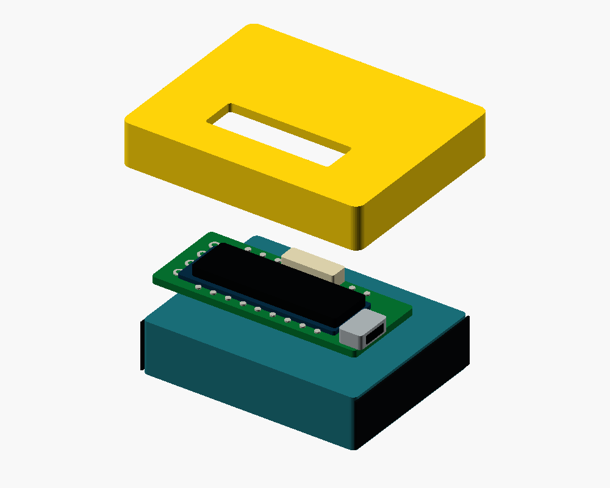
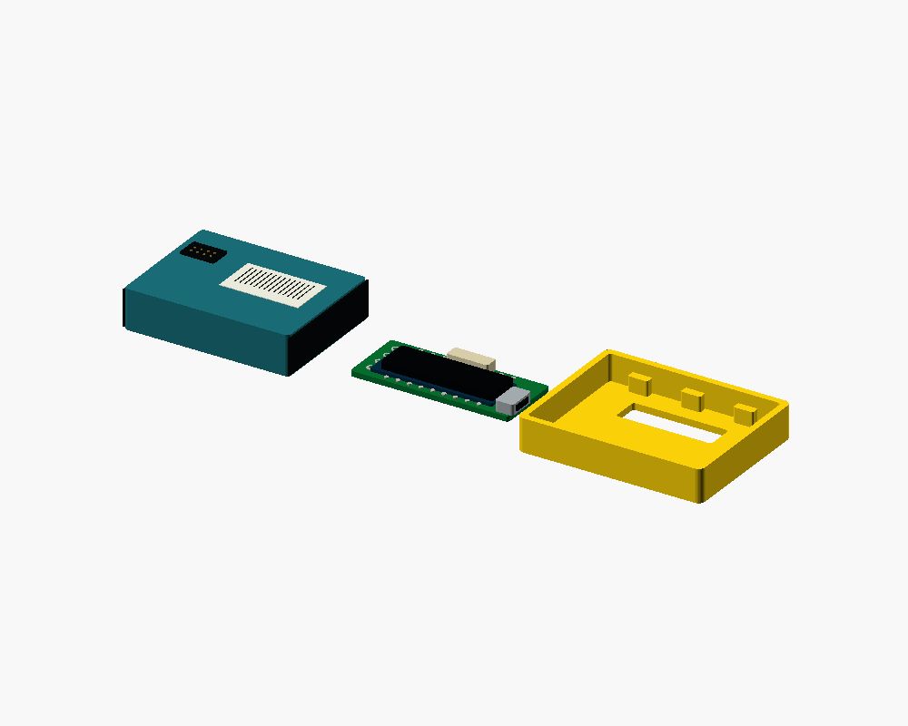
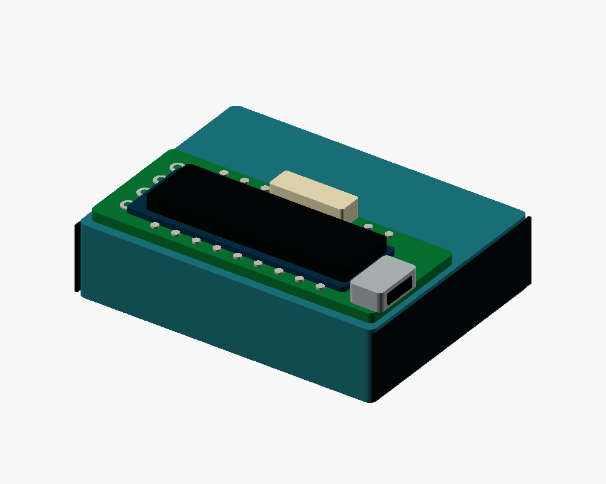
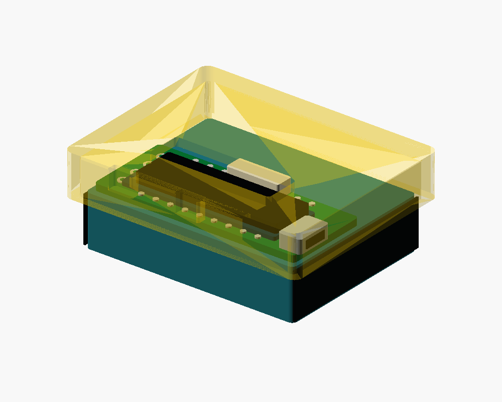
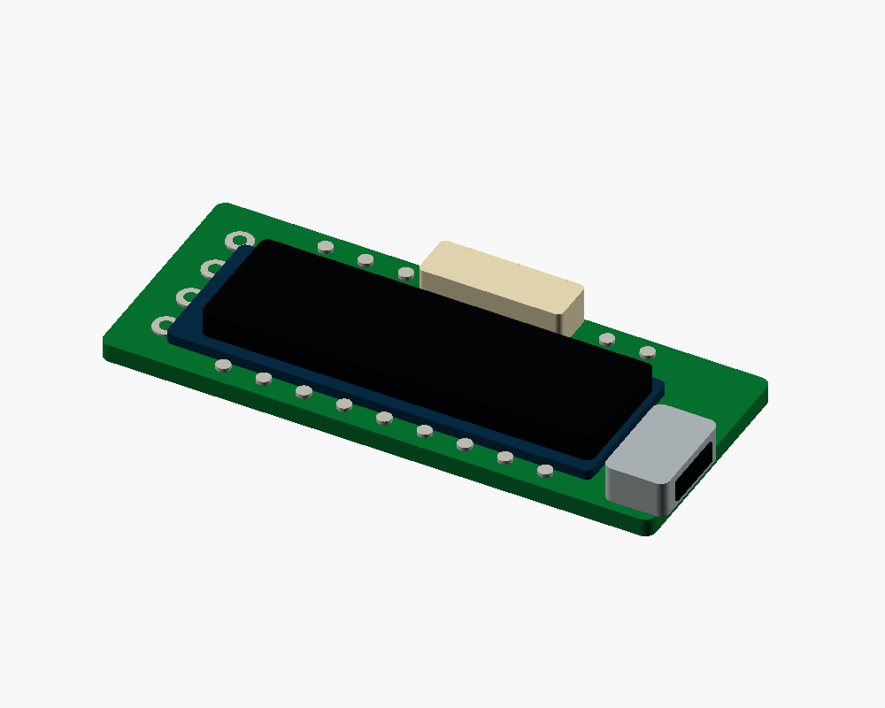
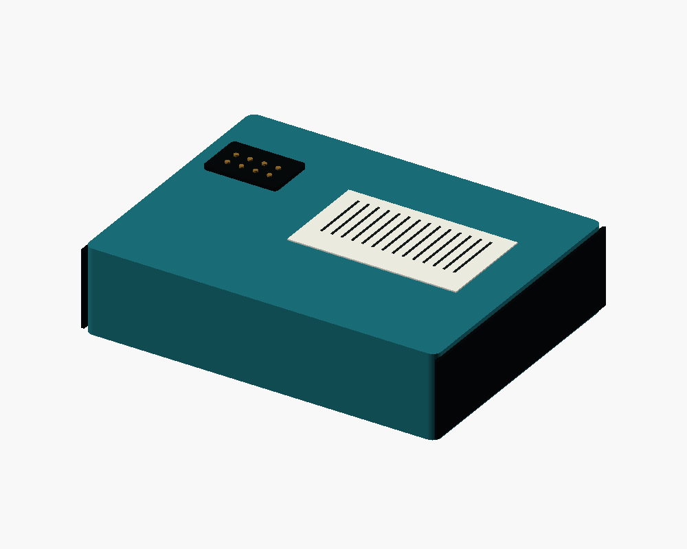
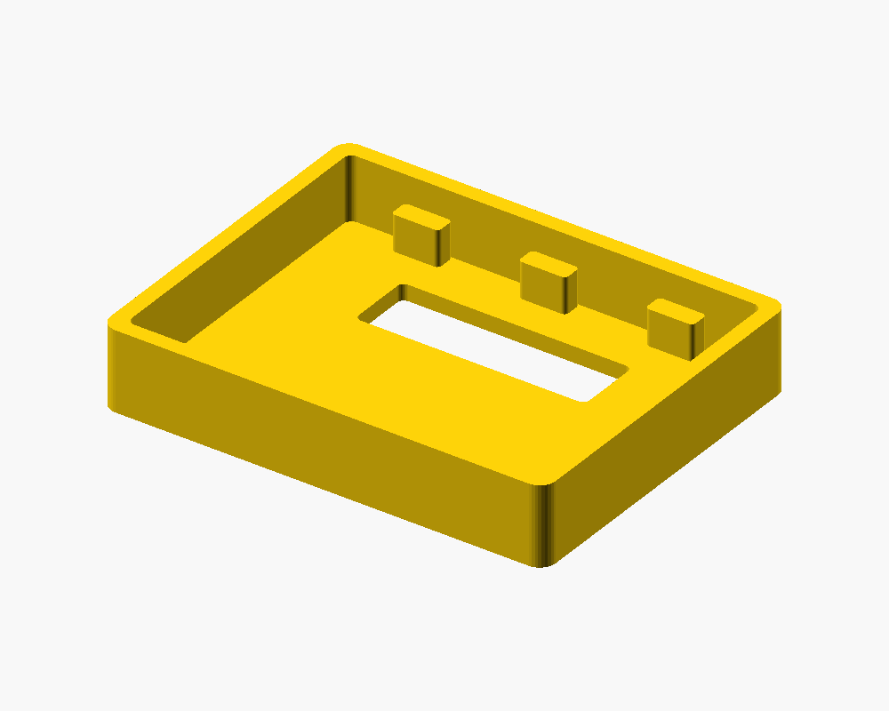
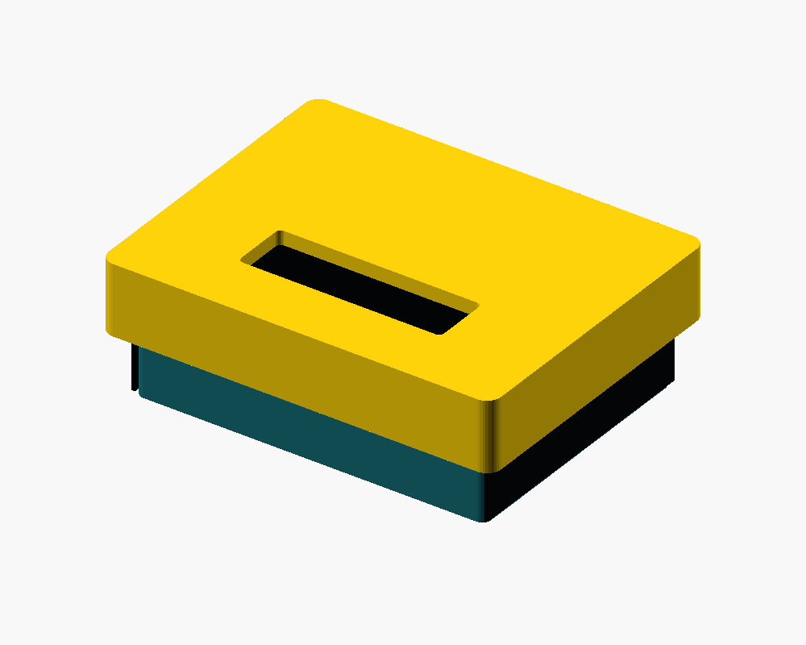
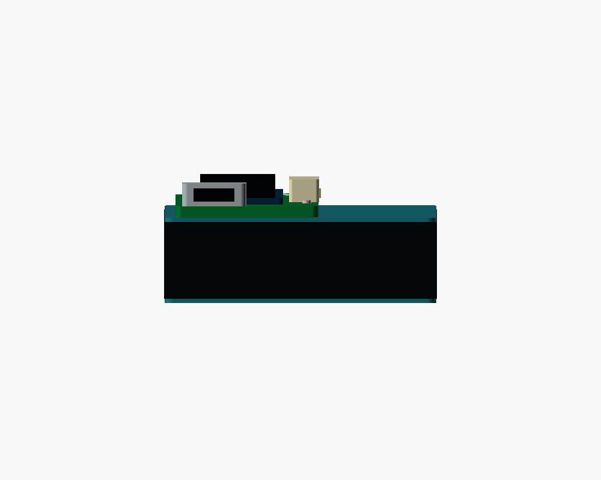
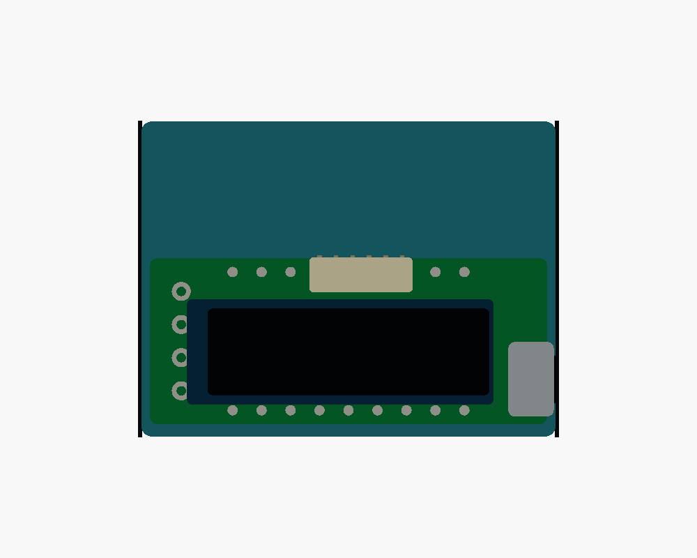

PM2.5 monitor - OpenSCAD study
Ten orthographic views of a reproducible parametric model based on the photographed enclosure, Plantower sensor, display board, and supplied schematic.

01Exploded assembly
Yellow cover, display board and sensor separated vertically.

02Component layout
Parts arranged side by side for visual identification.

03Assembled stack
Three-quarter view of the internal component stack.

04Enclosure fit check
Shell and components combined to inspect approximate placement.

05Display PCB
OLED carrier, connector and board proportions.

06Sensor module
Plantower module body and connector orientation.

07Enclosure interior
Open shell, internal floor opening and wall profile.

08Closed enclosure
Exterior form with the electronics contained.

09Low side profile
Near-horizontal orthographic view of stack height.

10Top of stack
Plan view for comparing component footprints.